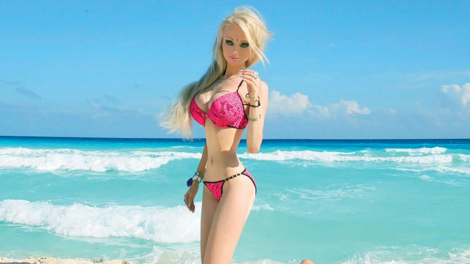
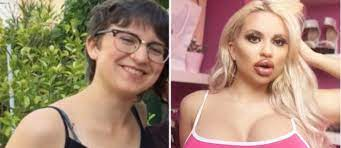
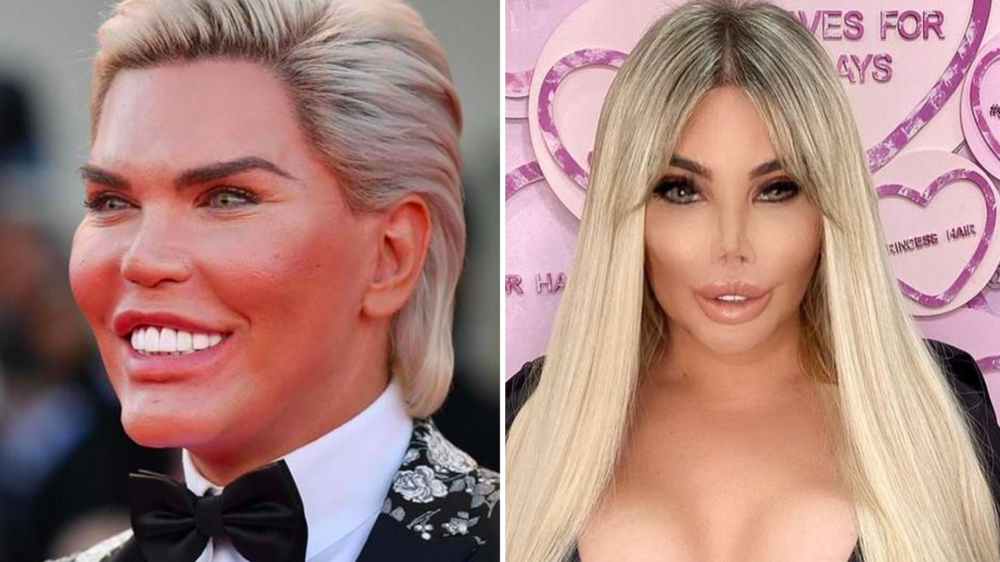

⠀⠀⠀⠀⠀Ter a aparência semelhante a da barbie é um sonho de algumas mulheres. A ucraniana Valeria Lukyanova é a primeira de muitas mulheres que se autodenominam "bonecas Barbie humanas". Em 2012, a modelo se tornou amplamente conhecida na internet por compartilhar
seus encantadores olhos azuis, longos cabelos loiros e um corpo de boneca.

⠀⠀⠀Jessy Bunny, uma modelo alemã, já gastou 24 mil libras, cerca de R$80 mil, com cirurgias para se parecer com a boneca. A modelo disse em uma entrevista ao britânico "The Sun" que quando era criança, ela só queria ser criança, brincando de boneca, se
maquiando e vestindo roupas diferentes, por isso foi repreendida. Seus pais, muito conservadores, não aprovam esse comportamento.
 Roddy foi chamado de Ken Humano nos últimos anos, e ele decidiu deixar essa função para buscar sua identidade. Segundo o anfitrião, a descoberta da
mudança de sexo ocorreu em meados de maio de 2019, durante o tratamento por um psiquiatra. Hoje em dia se identifica como Jessica Alves, e quer ter a aparência cada vez mais parecida com a Barbie.
